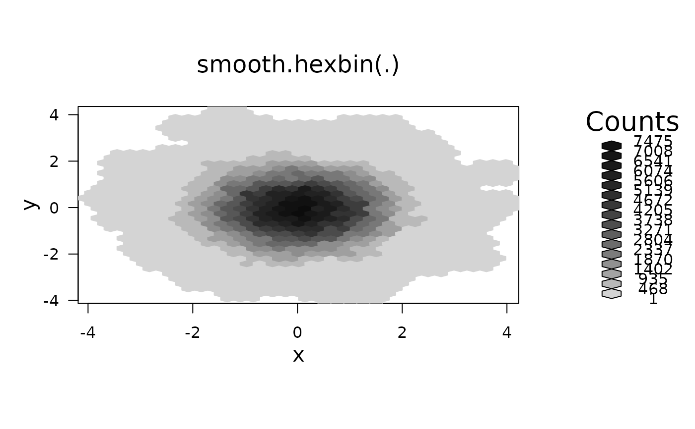
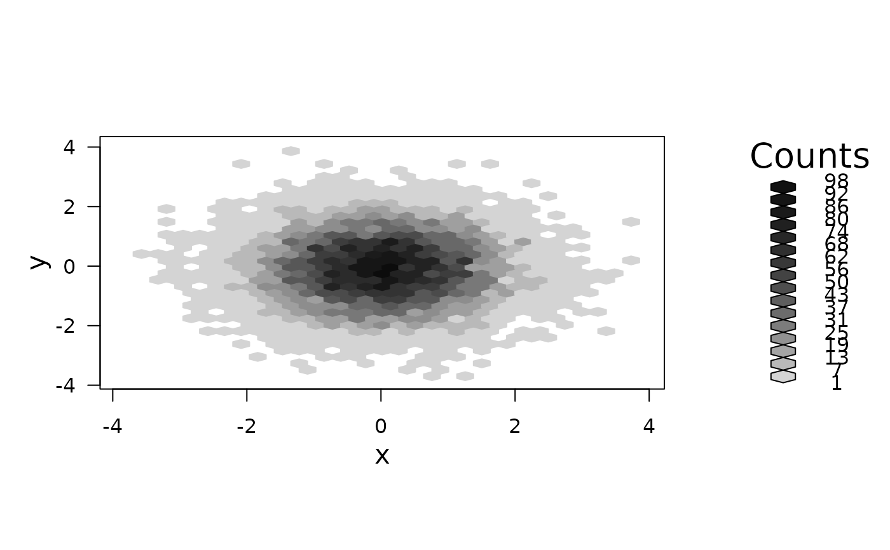

smooth.hexbin.RdGiven a "hexbin" (hexagon bin) object, compute a discrete
kernel smoother that covers seven cells, namely a center cell and its
six neighbors. With two iterations the kernel effectively covers
1+6+12=19 cells.
smooth.hexbin(bin, wts=c(48,4,1))object of class "hexbin", typically resulting from
hexbin() or erode,hexbin-method.
numeric vector of length 3 for relative weights of the center, the six neighbor cells, and twelve second neighbors.
an object of class "smoothbin", extending class
"hexbin", see hexbin.
The object includes the additional slot wts.
see grid.hexagons and hexbin.
This discrete kernel smoother uses the center cell, immediate neighbors and second neighbors to smooth the counts. The counts for each resulting cell is a linear combination of previous cell counts and weights. The weights are
| 1 center cell, | weight = wts[1] |
| 6 immediate neighbors | weight = wts[2] |
| 12 second neighbors | weight =wts[3] |
If a cell, its immediate and second neighbors all have a value of
max(cnt), the new maximum count would be
max(cnt)*sum(wts). It is possible for the counts to overflow.
The domain for cells with positive counts increases. The hexbin
slots xbins, xbnds, ybnds, and dimen all
reflect this increase.
Note that usually dimen[2] = xbins+1.
The intent was to provide a fast, iterated, immediate neighbor smoother. However, the current hexbin plotting routines only support shifting even numbered rows to the right. Future work can
(1) add a shift indicator to hexbin objects that indicates left or
right shifting.
(2) generalize plot.hexbin() and hexagons()
(3) provide an iterated kernel.
With wts[3]=0, the smoother only uses the immediate neighbors.
With a shift indicator the domain could increase by 2 rows (one bottom
and on top) and 2 columns (one left and one right). However the current
implementation increases the domain by 4 rows and 4 columns, thus
reducing plotting resolution.
x <- rnorm(10000)
y <- rnorm(10000)
bin <- hexbin(x,y)
# show the smooth counts in gray level
smbin <- smooth.hexbin(bin)
plot(smbin, main = "smooth.hexbin(.)")

# Compare the smooth and the origin
smbin1 <- smbin
smbin1@count <- as.integer(ceiling(smbin@count/sum(smbin@wts)))
plot(smbin1)
smbin2 <- smooth.hexbin(bin,wts=c(1,0,0)) # expand the domain for comparability
plot(smbin2)
